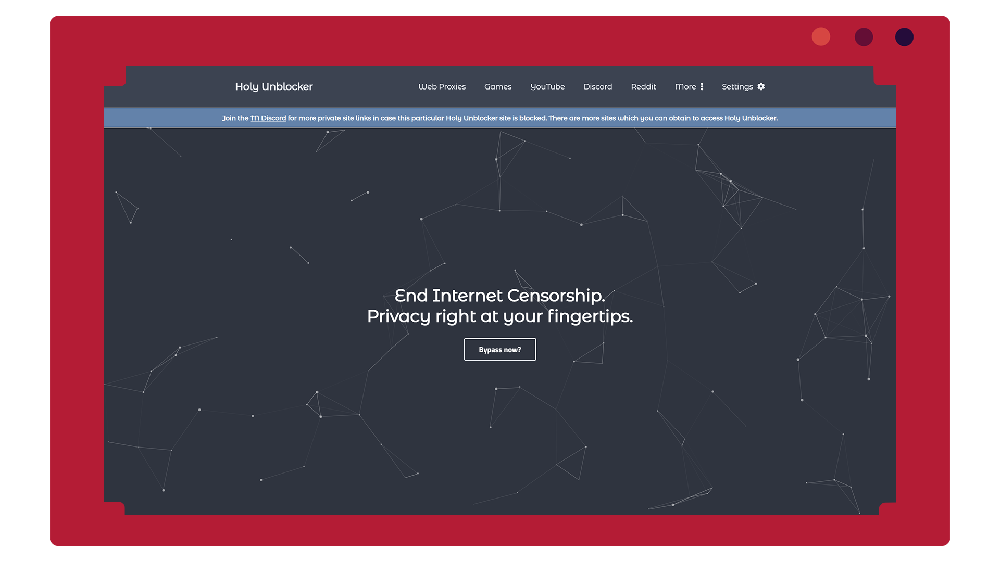
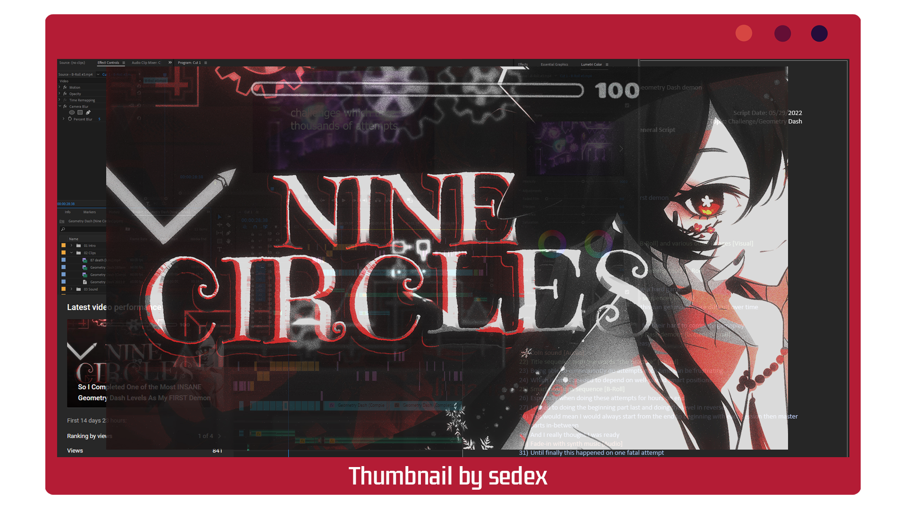
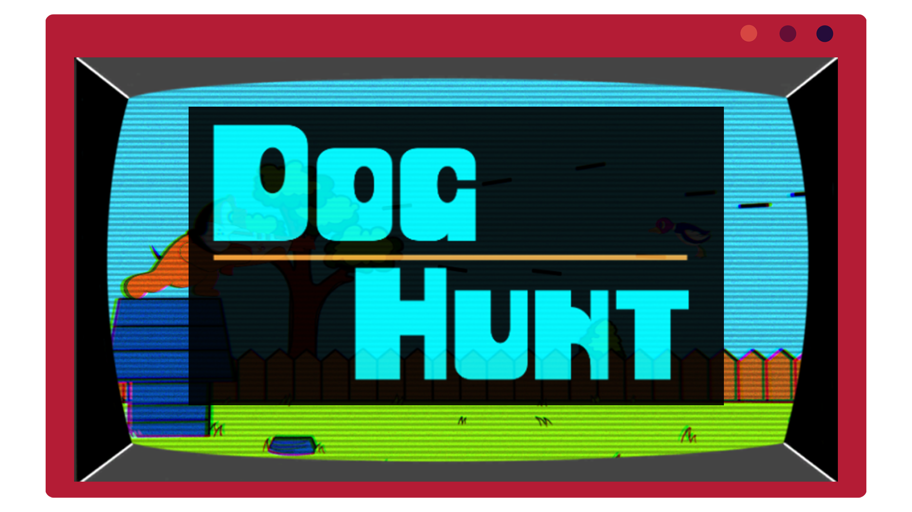

Projects
- Web Development | Video Production | Games | Music Production -
Hello! Welcome to my projects page.
Here you will find an overview on everything I've done!
-
Holy Unblocker, an official web proxy service.

Holy Unblocker
Holy Unblocker is a service which can bypass web filters regardless of whether it is an extension or network-based.
Being a secure web proxy service, it supports numerous sites while being updated frequently and concentrating
on detail with design, mechanics, and features.
HU works with a large number of sites, including YouTube, Discord, and more!
Also has a good amount of locally hosted games featured on the site.
At its peak HU had well over a million unique users per month and over ten million views monthly. -
So I Completed One of the Most INSANE Geometry Dash Levels As My FIRST Demon

Video Essay #1
This project was essentially the first video that I did which used actual editing, artists and lastly a script.
The challenge of this video also made this project also pretty difficult to record.
Overall I had a fun time working on this and the editing turned out great at the beginning with the combination of transitions and music.
The visual game effects used for this video was MagicHDR for those "RTX" looks. Everything else using stock Premiere Pro.
The client for it has great UI and you can check out the shaders used here: https://reshade.me
Credits:
sedex (thumbnail) - https://twitter.com/sssedex
DM DOKURO (Intro) - 64657363656E74 -the plummet
Kevin Penkin (Outro) – Pathway
Snafu - Dear Sewerslvt, Thank you
F4ely – Hu Tao Art
蒼ウサギ – https://twitter.com/AoUSA0328/status/1373972698380988418
Neko Laura - https://www.pinterest.com/pin/4081455902640682
-
Dog Hunt | Unity Project

Dog Hunt
This project was the first game I ever produced in Unity with a team!
Essentially Dog Hunt is a cool Nintendo based remake of Duck Hunt with a twist.
Service (now with new ownership): https://holyubofficial.net
GitHub: https://github.com/QuiteAFancyEmerald/Holy-Unblocker
Smaller Prpjects:
To be updated with more completed (and good) projects!